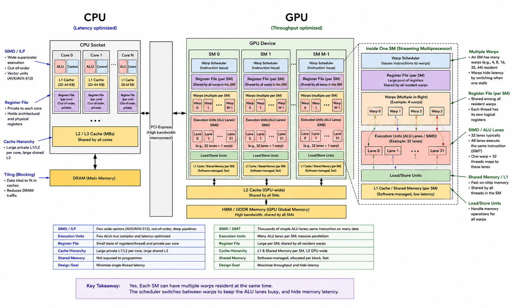

Inside the GPU
The bird's eye view

Zooming in on that second arrangement, on the GPU in this laptop:
GPU
├── VRAM 10.7 GB
│ └── L3 96 MB ── L2 3 MB
└── 36 × Compute Unit (NVIDIA: SM)
├── 2 × SIMD partition
│ ├── 32 ALU lanes
│ ├── register file 128 KB
│ └── warp scheduler
├── L1 16 KB
└── shared memory 64 KB
Three separate things decide whether that machine runs fast, and the rest of the lecture is one section on each:
- Architecture & physical components — what it is made of, and how many of each.
- Execution model & parallelism — how your code is mapped onto those parts, and what the mapping costs.
- Memory hierarchy & AI bottlenecks — how data reaches the ALUs, and which of the two limits you are actually hitting.
Every number below comes from the same laptop — an 8-core Ryzen 9 5900HX with a Radeon RX 6700M — and each is readable on your own machine in seconds.
1. Architecture & physical components
The parts, named
Everything in the diagram above, defined before we go and count them.
Hardware — what is physically on the die:
| Term | What it is |
|---|---|
| ALU lane | One arithmetic unit. Performs one thread's multiply or add. Marketed as a "CUDA core". |
| SIMD partition | A row of ALU lanes, plus a register file and a scheduler. Executes one instruction across the whole row at a time. |
| Compute Unit (NVIDIA: SM) | The repeating building block of the chip: several SIMD partitions, an L1 cache, and a shared-memory scratchpad. Work is handed to the GPU in units that land on one of these. |
| Register file | Per-partition storage holding the live variables of every thread currently loaded. Unusually large; Section 2 explains why. |
| Shared memory (AMD: LDS) | A small scratchpad inside each compute unit, managed by your program rather than by the hardware. |
| Tensor core (AMD: matrix core) | A separate unit inside the SM that computes a small matrix multiply-accumulate as a single instruction, at reduced precision. The GPU in this laptop has none — which is why it is absent from the diagram, and why every FP32 number in this lecture comes from ordinary ALU lanes. |
| VRAM | The GPU's own DRAM, reached through L2 and last-level cache. |
Software — what your program is made of:
| Term | What it is |
|---|---|
| Thread | One instance of your code, computing one element. You write the code for a single thread. |
| Warp (AMD: wavefront) | A fixed-size group of threads — 32 on most hardware — that execute in lockstep, sharing one program counter. This, not the thread, is what the hardware schedules. |
| Block (AMD: workgroup) | A group of warps assigned together to one compute unit. The unit you request, and the unit that shares a scratchpad. |
| Grid | All the blocks needed to cover your problem. |
One point deserves separating out, because it is the most common piece of GPU confusion:
A CUDA core is not a core. It is one ALU lane, with no program counter, no instruction fetch and no independent control. It cannot run a program.
"2,304 cores" invites a picture of 2,304 tiny CPUs. There are 36 units that fetch and decode instructions, and 2,304 arithmetic lanes for them to drive. Prefer 2,304 FP32 ALUs — it is accurate, and it names the only reason those lanes are cheap: they share control.
Two vendors, one idea
Most literature uses NVIDIA's vocabulary; rocminfo reports AMD's. They name the same
structures:
| NVIDIA | AMD / ROCm |
|---|---|
| SM — Streaming Multiprocessor | CU — Compute Unit |
| warp (32 threads) | wavefront (32 or 64 threads) |
| CUDA core | stream processor / shader ALU |
| shared memory | LDS — Local Data Share |
| thread block | workgroup |
| warp scheduler | SIMD scheduler |
| tensor core | matrix core |
This lecture says warp, SM and shared memory, because that is what you will meet elsewhere.
Read your own GPU
With the terms in hand, the numbers become readable:
rocminfo # AMD
nvidia-smi -q # NVIDIA
On this machine, for the discrete GPU:
Marketing Name: AMD Radeon RX 6700M
Compute Unit: 36
SIMDs per CU: 2
Wavefront Size: 32
Max Waves Per CU: 32
Workgroup Max Size: 1024
L1: 16 KB L2: 3 MB L3: 96 MB
LDS (shared memory): 64 KB
Cacheline Size: 128 B
VRAM: 10.7 GB
Two derived numbers carry the rest of the lecture.
Arithmetic units. Each compute unit has 2 SIMD engines, each 32 lanes wide — 64 FP32 ALUs per CU:
36 CU × 2 SIMDs × 32 lanes = 2,304 FP32 ALUs
At 2.3 GHz, with 2 FLOP per fused multiply-add, that is 10.6 TFLOP/s — the spec-sheet figure, recovered from parts read off the device.
Threads in flight. Each CU holds up to 32 waves of 32 threads:
32 waves × 32 threads = 1,024 threads resident per CU
36 CUs = 36,864 threads resident on the GPU
Put the two together: 1,024 threads resident per compute unit, 64 ALUs to run them on. The hardware keeps sixteen times more work loaded than it can execute at any instant. Section 2 is why.
Two GPUs, two warp sizes
rocminfo on this laptop reports two GPUs — the discrete RX 6700M and the Ryzen's
integrated graphics:
| RX 6700M (discrete) | Radeon Graphics (integrated) | |
|---|---|---|
| Compute Units | 36 | 8 |
| SIMDs per CU | 2 | 4 |
| Wavefront size | 32 | 64 |
| Max waves per CU | 32 | 40 |
Two warp widths, same chassis, same driver. 32 is a design choice, not a law of nature — NVIDIA has used 32 for many generations, AMD's older GCN architecture used 64. Code that hardcodes 32 is wrong on half of this machine.
💬 Which part of a GPU does the heavy lifting for modern AI — the general-purpose ALUs, or the dedicated matrix units?
Answer
The popular answer is "matrix units, obviously." It is too confident.
- An FP32 matmul at N=2048 on this GPU measures 9,047 GFLOP/s against a 10.6 TFLOP/s FP32 roof — 85% of peak, on ordinary FP32 ALUs, with no matrix units involved. This GPU has none.
- The answer depends on the precision requested. At FP32 the general-purpose ALUs are the machine, and they get close to their ceiling. Dedicated matrix units change the ceiling itself, for reduced precisions only.
"Tensor cores do the work" is a statement about which roof you are under, not about which silicon is busy.
2. Execution model & parallelism
How software lands on hardware
The four software terms map onto the hardware ones in a fixed way:
grid ──► the whole GPU
block ──► one compute unit (and stays there — see below)
warp ──► one SIMD partition, one instruction at a time
thread ──► one ALU lane
You write code for a thread. The hardware only ever schedules warps. Everything in this section follows from that gap.
SIMT is SIMD with the vector hidden
An AVX2 instruction on a CPU operates on eight float lanes at once: one instruction, one vector register, eight results. You write vector code, or hope the compiler generates it.
SIMT is the same hardware idea with a different interface. One instruction still drives many lanes in lockstep. But you write ordinary scalar code for one thread, and the hardware bundles 32 of them and issues one instruction for the group. There is one program counter per warp, not per thread.
The friendlier interface is why GPUs are programmable by people who have never written an intrinsic. It is also why divergence, below, is surprising: the code describes one thread, so nothing in it warns that 31 others are executing in lockstep.
Sizing blocks
Warps are allocated whole:
warps_per_block = ceil(block_size / 32)
A block of 100 threads occupies 4 warps — 128 lanes — and 28 of those lanes are masked off for the block's entire lifetime, and billed anyway. Size blocks in multiples of 32. The maximum here is 1,024 threads = 32 warps.
Blocks cannot move
Once a block is assigned to an SM it stays there until it finishes. It is never migrated and never preempted onto another SM.
That rigidity is what makes shared memory possible: the hardware can offer a block a fast scratchpad it collectively owns precisely because the block cannot move away from the SM that scratchpad lives in. The same rigidity is why a block's demands — registers, shared memory — must be satisfiable by a single SM before it can launch at all.
Latency hiding: run somebody else
An FMA costs about 1 cycle. An L1 hit costs about 4. A trip to DRAM costs 200–400. One cache miss forfeits hundreds of potential arithmetic operations.
A CPU answers this with out-of-order execution, branch prediction, prefetching and speculation — machinery that keeps one instruction stream alive across the wait, paid for per stream. A GPU has almost none of it.
issue load
│
│◄──────── ~400 cycles ────────►│
│ │
▼ ▼
what runs here? data arrives
The GPU does not wait. It runs somebody else.
Inside each SM, per SIMD partition, sits a warp scheduler. Every cycle it examines the resident warps, discards those waiting on memory or a barrier, and issues an instruction from one that is ready. When a warp issues a load and cannot proceed, the scheduler simply stops selecting it; when the data arrives it becomes eligible again. From the ALUs' point of view nothing stalled.
That is what the 1,024 resident threads per CU are for.
Why the switch is free
The switch costs nothing. Not a few cycles — nothing. No state is saved and none is restored. A stalled warp's registers were never moved; they sit in the register file exactly where they were, and they are still there when the scheduler returns. Switching warps is a change in which register indices the next instruction reads.
That is only possible if the register file holds the live state of every resident thread simultaneously — 1,024 threads per CU, all instantly resumable:
DRAM takes ~400 cycles
│
▼
don't wait — run another warp
│
▼
so many warps must be resident at once
│
▼
so switching between them must be free
│
▼
so no state may ever be saved or restored
│
▼
so the register file must hold every resident thread's state
│
▼
a register file larger than L1
That last line is a real and measurable oddity of GPU memory, and Section 3 opens on it.
The GPU is not trying to make one thread fast. It is trying to never have an idle ALU.
How much this actually hides
"16× oversubscription, therefore 400 cycles hidden" does not follow. Sixteen waves per SIMD, each contributing one ready instruction in turn, covers tens of cycles, not hundreds. The real relationship is closer to:
latency hidden ≈ (resident warps) × (independent requests in flight per warp)
with caches absorbing the remainder. Oversubscription is the mechanism; how much it buys depends on the kernel too — on whether each thread has independent work to issue while it waits. The divergence measurement below shows that second factor directly.
💬 An operating system also switches to other work when a task blocks. A GPU switches warps when one stalls. Same idea?
Answer
Same word, three orders of magnitude apart.
- An OS context switch costs microseconds. Registers are written to memory, stack pointer and page tables swapped, caches and TLBs left cold for the incoming task. Operating systems work hard to avoid doing it often.
- A warp switch costs approximately zero, because the expensive part never happens. No state moves. The GPU paid in advance by building a register file large enough that no state ever has to move.
The GPU converted a recurring time cost into a one-off silicon cost — affordable only because it does not also spend transistors making one stream fast.
What the model costs: divergence
Runnable code for this and for the coalescing measurement in Section 3:
code/gpu_internals/warp_costs.py.
It is written in Triton, so it runs on NVIDIA and AMD alike, and on a free Colab GPU.
💬 A warp of 32 threads hits if (x > 0) a(); else b(); and exactly half the threads take each side. What does the hardware do?
Answer
It cannot do both at once — one program counter for the warp, one decoder driving all 32 lanes. So it serializes:
- Run
a()with the 16 threads that failed the test masked off. They occupy their lanes and produce nothing. - Run
b()with the other 16 masked off.
Both sides execute; every lane is idle for one of the two passes. This is warp divergence.
The price is the sum of the paths taken within the warp, not the maximum. Two consequences:
- Divergence is per warp, not per block. If a branch splits on a boundary that is a
multiple of 32, every thread in each warp agrees and there is no divergence at all.
if (tid < 32)is free;if (tid % 2)runs both paths. Same branch, same data, different price. - The worst case is a 32-way switch: 32 sequential passes over one region of code.
A divergent branch therefore issues twice the instructions. Measured on this GPU — same useful work per element, only the branch structure differs:
warp agrees, one path runs : 1.200 ms 3.58 TFLOP/s ( 32% of peak)
warp splits on (lane % 2) : 1.297 ms 6.62 TFLOP/s ( 58% of peak)
2x instructions, one dependent chain : 2.543 ms 3.38 TFLOP/s ( 30% of peak)
Twice the instructions — and 1.08× the time.
💬 Divergence made the warp issue twice as many instructions. Why did it barely cost any time — while the third line, with the same instruction count, cost 2.12×?
Answer
Look at what the machine was doing before the branch was added: 32% of peak. The single-path kernel is one long dependent chain — every operation needs the result of the one before it, so most issue slots go empty waiting.
The divergent kernel's two paths are independent of each other. Its extra instructions drop into exactly the slots the first path was wasting, and the machine reaches 58% of peak. The second half came nearly free.
The third line is the control: the same doubling of instruction count, but as one longer dependent chain. No spare slots to fill, so it costs the full 2.12×.
Divergence bills you in issue slots. Whether that costs you time depends on whether the machine had spare slots.
This is latency hiding visible from outside. It is also why "avoid all branches" is folklore rather than advice, and why instruction counts must be measured rather than reasoned about.
What the model costs: occupancy
Registers and shared memory are budgets divided among the blocks resident on an SM. Ask for more per thread, and fewer threads fit.
- More registers per thread → fewer resident warps → fewer candidates for the scheduler → latency hiding weakens and memory latency starts showing through.
- Exceed the hard per-block limit and the kernel does not launch at all: a runtime failure.
The arithmetic uses numbers already read off the device. This GPU allows 32 waves per CU and offers 64 KB of LDS to a workgroup, so a block requesting 32 KB of shared memory caps you at 2 blocks resident per CU, however few registers its threads use.
💬 Your kernel runs at 25% occupancy. Is that a problem?
Answer
Not necessarily, and chasing the number wastes time.
Occupancy is one of two inputs to the actual goal — enough independent work in flight to cover the memory latency this kernel generates. The other input is how much independent work each thread has on its own, which is exactly what the divergence measurement showed: that kernel reached 58% of peak by giving each thread a second independent chain, with no change in occupancy at all.
A kernel with high arithmetic intensity, many registers and plenty of instruction-level parallelism can run well at 25%. Raising occupancy by cutting registers per thread can spill to memory and end up slower.
Occupancy is a diagnostic to read when something is slow, not a score to maximize.
3. Memory hierarchy & AI bottlenecks
A GPU has the same levels as a CPU — registers, L1, L2, last-level cache, DRAM. Three things about how it arranges them are different.

Image credit: arccompute.io
Difference 1 — the register file is bigger than L1
L1 is 16 KB per compute unit. The register file beside it is hundreds of kilobytes — AMD's RDNA2 documentation gives each SIMD a 128 KB vector register file, so 256 KB per compute unit. Sixteen times the L1 next to it.
On a CPU the hierarchy narrows as it gets faster: a few hundred bytes of registers, 32 KB of L1, megabytes below. Here the fastest level is also one of the largest — because, as Section 2 derived, it has to hold the live state of every resident thread at once.
Difference 2 — shared memory is not a cache
Much writing treats "L1 cache / shared memory" as one thing. On NVIDIA hardware they are carved from the same physical SRAM. Their contracts are opposites:
| L1 cache | Shared memory | |
|---|---|---|
| Who decides what is in it | the hardware | you |
| How you use it | you don't — you hope | you copy data in, explicitly |
| When it helps | when your access pattern happens to suit it | when you arranged for it to |
Cache blocking on a CPU means restructuring loops so a tile of the matrix stays resident while you reuse it — and then hoping the cache keeps it. On a GPU that hope becomes an instruction. Shared memory is a scratchpad you load and manage yourself, and a tiled GPU matmul stages its tiles there deliberately.
Difference 3 — GPUs cache heavily; they cache for a different reason
There is a folk belief that GPUs don't bother with caches. This laptop GPU carries 96 MB of last-level cache — six times the 16 MB of L3 on the CPU in the same machine.
The difference is not how much, it is what for. A CPU's cache is its primary defence against slow memory: if the data isn't there, the core stalls and the trick has failed. A GPU's cache is one tool of three, alongside high bandwidth and latency hiding. The measurement below shows those 96 MB doing real work.
💬 If registers are the fastest memory on the chip, why not build a register file big enough to hold the whole model and delete VRAM?
Answer
Two answers; the second is the one you will feel.
- Physics caps the total. SRAM costs far more area per bit than DRAM, and a register file needs many read/write ports, costing area and energy again. A chip that was all registers would have no room for ALUs and could not be cooled.
- Occupancy is what bites. The register file is a fixed budget divided among resident threads. Every extra register per thread means fewer threads resident. You never get an "out of registers" error — you quietly lose the parallelism that was hiding your memory latency.
Reaching memory: coalescing
A warp's 32 threads issue their loads together and the memory system serves them together. The cache line here is 128 bytes:
- 32 lanes reading 32 consecutive floats is exactly 128 bytes — one transaction serves the warp.
- 32 lanes reading addresses far apart land on different lines — 32 transactions to deliver the same 128 useful bytes.
The benchmark reads the same buffer, the same elements, each exactly once. Only the order changes; it is a permutation and nothing more:
buffer 16 MB in + 16 MB out (L3 is 96 MB)
contiguous : 0.234 ms 143.5 GB/s useful
stride 32 : 0.267 ms 125.7 GB/s useful 1.14x
stride 128 : 0.601 ms 55.8 GB/s useful 2.57x
stride 1024 : 1.062 ms 31.6 GB/s useful 4.54x
buffer 256 MB in + 256 MB out (L3 is 96 MB)
contiguous : 2.360 ms 227.5 GB/s useful
stride 32 : 4.750 ms 113.0 GB/s useful 2.01x
stride 128 : 24.173 ms 22.2 GB/s useful 10.24x
stride 1024 : 36.882 ms 14.6 GB/s useful 15.63x
Reordering the reads — not adding any — costs up to 15.6×, and drops a 227 GB/s memory system to 14.6 GB/s.
💬 In the small buffer, stride 1024 costs 4.5×. In the large one, the same stride costs 15.6×. The kernel is identical. What changed?
Answer
The 96 MB of last-level cache, doing exactly the job described above.
At 16 MB in and 16 MB out the whole working set fits in cache. The scattered access still fetches a whole 128-byte line for one useful float, but the rest of that line is still resident when a later warp comes for it. The cache converts a bandwidth disaster into a mild one.
At 256 MB the reuse window far exceeds the cache. Lines are evicted long before the lanes needing the rest of them arrive, so every scattered read pays full DRAM price.
Two conclusions:
- GPUs cache, and it matters — the difference between 4.5× and 15.6× is entirely the cache.
- Benchmark at the size you will actually run. A coalescing bug that measures "only 1.14× slower" on a toy input becomes 15× in production.
The bottleneck: which roof are you under?
Both axes of the roofline are computable from parts read off the device.
compute roof = 2,304 FP32 ALUs × 2 (FMA) × 2.3 GHz = 10.6 TFLOP/s
memory roof = (160-bit bus × 16 Gbps effective) / 8 = 320 GB/s
ridge point = 10.6e12 / 320e9 = 33 FLOP/byte
The memory clock comes off the device the same way the shader clock does:
cat /sys/class/drm/card*/device/pp_dpm_mclk # tops out at 1000 MHz here
That 1000 MHz is not the rate bytes arrive at. GDDR6 transfers 16 bits per pin per such clock, so the effective data rate is 16 Gbps — always check which of the two numbers a spec sheet quotes. The bus width comes from the product brief: 160 bits, consistent with 10.7 GB of 2 GB GDDR6 devices (5 chips × 32 bits).
Against that roof, the contiguous copy above reached 227 GB/s — 71% of the 320 GB/s theoretical figure. The roof and the sustained rate are different objects, and a gap like this is normal: the roof is a ceiling you approach, not a speed you are issued.
Below 33 FLOP/byte this GPU is memory-bound. Above it, compute-bound.
Where a matmul sits
An FP32 matmul at N=2048:
work = 2N³ = 17.2 GFLOP
traffic = 3N² × 4 bytes = 50.3 MB
intensity = 17.2e9 / 50.3e6 = 341 FLOP/byte
341 is an order of magnitude right of the 33 ridge, so the roofline predicts compute-bound, landing near the compute roof. Measured: 9,047 GFLOP/s — 85% of 10.6 TFLOP/s.
Matmul's arithmetic intensity grows with N, so the larger the problem, the further right of the ridge it sits.
💬 Is running a large language model a memory-bound or a compute-bound problem?
Answer
The question is malformed, and the two halves of the answer are what make LLM serving an engineering discipline.
- Generating one token, batch size 1. Every weight is streamed through the ALUs for about two FLOPs per parameter. Intensity is around 1–2 FLOP/byte — far left of the 33 ridge. Memory-bound. The ALUs are nearly idle; you are reading a large file from VRAM as fast as the bus allows.
- Training, or processing a long prompt, at a real batch size. The same weights serve many tokens at once, so the operation is a large matmul with intensity in the hundreds — right of the ridge. Compute-bound.
Same model, same GPU, opposite bottleneck. The only thing that changed is arithmetic intensity, and it changed because of batching — a software decision.
This is why serving systems fight to batch requests together, and why a model that trains at 90% utilization can serve at 5%. It also tells you which optimizations can possibly help: left of the ridge, anything that reduces bytes per parameter is worth more than any amount of extra arithmetic throughput.
Run it yourself
rocminfo # or: nvidia-smi -q
cat /sys/class/drm/card*/device/pp_dpm_sclk # shader clock levels
cat /sys/class/drm/card*/device/pp_dpm_mclk # memory clock levels
python code/gpu_internals/warp_costs.py
Without a GPU, all of this runs on a free Colab or Kaggle notebook — the Triton benchmark is
vendor-neutral, and nvidia-smi -q gives an SM count, a warp size and a clock to build the
roofline from.
Three exercises:
- Build the roofline for a different GPU and place a 341 FLOP/byte matmul on it. Where is its ridge point?
- Sweep the coalescing stride and buffer size on your own hardware, and find where last-level cache stops rescuing you.
- Make the divergence benchmark hurt. It cost only 1.08× because the two paths were independent — give each path a dependency on the other's previous value and measure again.
References
- Vijay Janapa Reddi, Machine Learning Systems — Ch 11: AI Acceleration
- NVIDIA, CUDA C++ Programming Guide — §5 Hardware Implementation (SIMT, divergence, occupancy)
- AMD, RDNA 2 Instruction Set Architecture Reference Guide — compute units, wavefronts, the vector register file
- Triton documentation — the language the Section 2 benchmarks are written in
- Course code:
code/gpu_internals